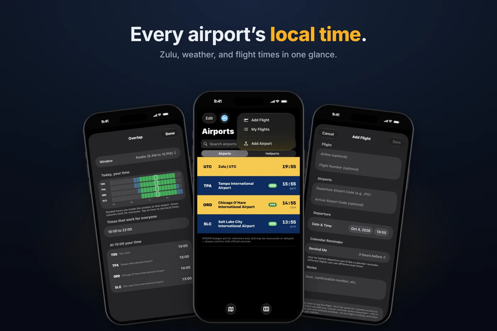

AvClock 1.9 for iPhone and 1.6 for Mac Are Out Now
AvClock 1.9 for iPhone and iPad and AvClock 1.6 for Mac are live on the App Store now. If you fly for a living, fly a lot, or plan your week around airports in other time zones, this is the best version of AvClock yet. Here's what it is, who it's for, and what's new on each.

What AvClock Is
AvClock is a world clock built around airports instead of cities, and a pocket directory of airports around the world. Search by ICAO or IATA code, city, or country, and every airport comes with its live local time, Zulu, sunrise and sunset, and local weather in plain English. It also has the things you actually look up before a trip: TSA PreCheck, CLEAR, and lounges, the plug type, which side of the road they drive on, emergency numbers, and a currency converter. One tap gets you directions in Maps, Uber, or Lyft.
It runs on iPhone, iPad, Mac (in the menu bar), and Apple Watch. There's no account, no ads, and nothing collected about you.
Who It's For
- Pilots and student pilots. LOCAL and Zulu pinned side by side, and every airport's time zone without the math. With Premium, live METAR and TAF color-coded by flight category (VFR MVFR IFR LIFR), FAA ground stops and delays, and heliports and hospital helipads.
- Frequent flyers. The amenities, currency, and plug details for wherever you land are free. With Premium, log a trip from the + button with its own calendar reminder, get a jet lag plan built from your two time zones, and watch a departure countdown on your Lock Screen.
- Flight attendants and crew. Three time zones in a week is normal. Overlap shows the hours when home, your base, and your layover are all awake, so you know when to call.
- Dispatchers, ops, and AvGeeks. ICAO and IATA codes side by side, military airports marked, an interactive world map, and any airport one swipe away in iPhone search.
New in 1.9 for iPhone and iPad
- Overlap (free): a 24-hour strip for you and every saved airport, with the hours that work for everyone in green.
- Add Flight and My Flights (Premium) from the + button, each flight with its own calendar reminder, 30 minutes to 12 hours ahead.
- A jet lag plan (Premium) for each trip: when to get light, when to avoid it, and when to sleep, day by day.
- A departure countdown (Premium) on your Lock Screen and in the Dynamic Island, in local time and Zulu.
- The Big Clock widget (free) for StandBy and the Home Screen. Tap the arrow to step through your airports.
- Spotlight search (free): type a code or a city on your Home Screen and land on that airport.
The full tour is in AvClock 1.9: Overlap, jet lag plans, and flights from the + button.
New in 1.6 for Mac
AvClock on the Mac lives in your menu bar, and now you choose what it shows up there: your first airport, your first two, Zulu time, your first airport and Zulu together, or just the plane icon. Everything else is one click away: your airports with live times, sunrise and sunset, search, the airport map, and Desktop widgets.
More on the new setting, with examples: AvClock 1.6 for Mac: choose what your menu bar shows.
Free to Download, One Upgrade
The world clock, the airport directory, Overlap, the widgets, and Spotlight search are free, with no limit on airports. AvClock Premium is $4.99 once, not a subscription. It adds live METAR and TAF, FAA delays, alerts, My Flights, the jet lag plan, the countdown, heliports, and more, and one purchase unlocks it on your iPhone, iPad, and Mac.
AvClock is reference and informational only, not for flight planning, navigation, or pilotage. Weather, delays, and airport data may be incomplete or delayed, and flights you log are your own entries, not live flight data. Always confirm with your airline and official sources (FAA, NOTAMs, charts, ATC).